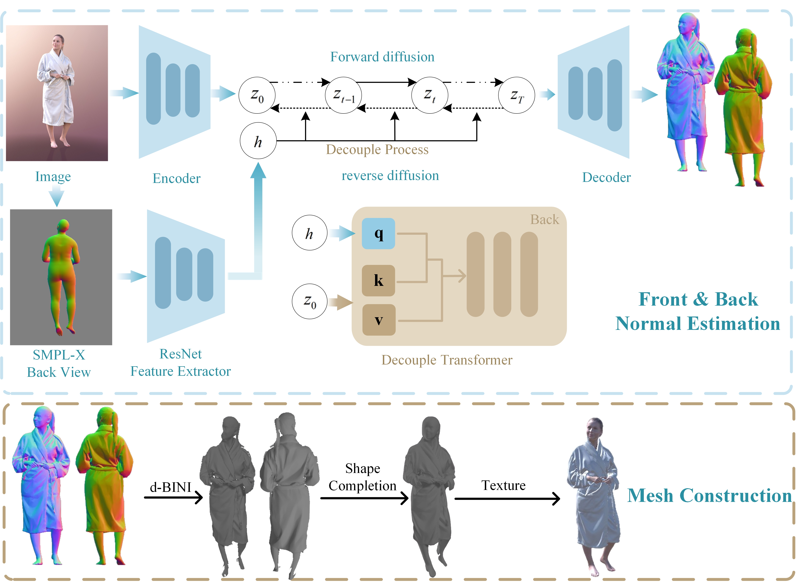

GBCN is a novel human body reconstruction network based on a diffusion model. Given an image, GBCN utilizes the Brownian Bridge diffusion process to map the original image to 3D features in the latent space. It refines normal maps to reconstruct a detailed clothed human mesh. By employing a consistency loss function and an SMPL-X prior decoupling module, GBCN achieves an effective extension of the Brownian Bridge diffusion process from 2D to 3D, bridging large domain gaps. Our method demonstrates excellent performance on in-the-wild images and shows significant potential in real-world applications such as 3D printing and scene construction.

Given an image, GBCN utilizes the Brownian bridge diffusion process (§3.1) to directly predict the front and back normal maps of a clothed human body. During the back normal map prediction, a cross-attention mechanism is employed to integrate SMPL back-view priors, where a prior-mixing strategy incorporates these priors as query inputs, thereby enhancing the model's capability to infer occluded regions from the image. To facilitate more accurate learning of normal map color patterns, a series of hybrid consistency losses (§3.2) are applied to guide the network's training process. The subsequent step involves 3D surface reconstruction (§3.3): specifically, under the guidance of SMPL-X estimates, GBCN converts the normal maps into incomplete 2.5D front and back surfaces and reconstructs the missing geometric details. Finally, a pre-trained texture prediction network is used to produce a high-quality textured mesh that can be directly employed in practical applications.